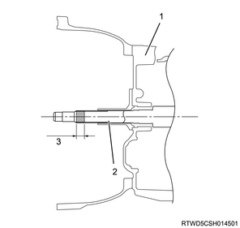
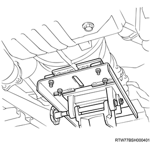
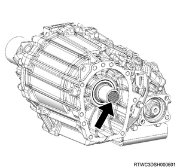
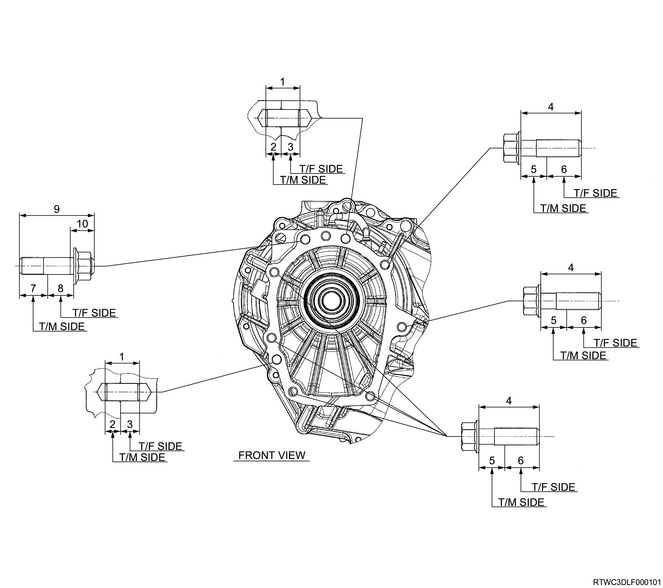
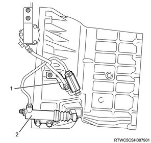
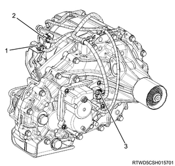
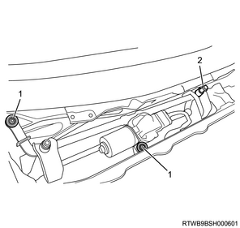
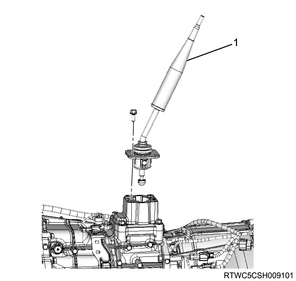
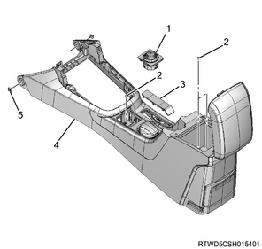
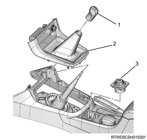

Transmission installation (MUX)
1. Transmission installation
1. Apply the grease to the input shaft.
Note
- Apply NICHIMOLY TC-5 or equivalent to the spline section of the input shaft.
Caution
- Take care not to excessively apply grease as doing so is a cause of clutch slipping.
Application quantity： 0.3 to 1.0 g { 0.01 to 0.04 oz }

- Clutch housing
- Input shaft
- Application area (15-25 mm (0.59-0.98 in))
2. Install the transmission to the engine.
Note
- To prevent the clutch housing starter motor attaching part from interfering with the floor panel, place the transmission in a position rotated counter-clockwise near the rear of the engine at approximately the same time as when you remove the transmission.
- Slowly operate the transmission jack so that the front of transmission aligns with the rear of the engine.
- Slowly operate the transmission jack so that the transmission becomes parallel to the engine.
- Align the top gear shaft spline section and the clutch-driven plate spline section.
- Tighten the transmission installation nut and bolt.
Tightening torque： 76 N・m { 7.7 kgf・m / 56 lb・ft }
2. Starter motor installation
3. Transmission crossmember installation
1. Install the cushion rubber to the transmission.
Tightening torque： 25 N・m { 2.5 kgf・m / 18 lb・ft }
2. Install the transmission crossmember to the frame.
Tightening torque： 67 N・m { 6.8 kgf・m / 49 lb・ft }
3. Connect the cushion rubber to the transmission crossmember.
Tightening torque： 140 N・m { 14.3 kgf・m / 103 lb・ft }
4. Install the brace to the frame and the transmission crossmember.
Tightening torque： 106 N・m { 10.8 kgf・m / 78 lb・ft }
5. Remove the jack from the transmission.

6. Remove the wire from the engine hanger and the hoist.
7. Remove the rear engine hanger from the cylinder head.
8. Remove the front engine hanger from the cylinder head.
4. Transfer assembly installation
1. Apply the grease to the input shaft.
Note
- Apply BESCO L-2 grease or equivalent to the spline section.

2. Install the transfer assembly to the transmission.
Tightening torque： 41 N・m { 4.2 kgf・m / 30 lb・ft }

- 20 mm {0.79 in}
- 9 mm {0.35 in}
- 11 mm {0.43 in}
- 35 mm {1.38 in}
- 15 mm {0.59 in}
- 20 mm {0.79 in}
- 16.5 mm {0.65 in}
- 15 mm {0.59 in}
- 43.5 mm {1.71 in}
- 14 mm {0.55 in}
5. Clutch slave cylinder connect
1. Connect the clutch slave cylinder to the transmission.
Tightening torque： 43 N・m { 4.4 kgf・m / 32 lb・ft }
2. Connect the orifice valbe to the clutch housing.
Note
- Install the orifice valve together with the orifice valve bracket as a unit.
Tightening torque： 10 N・m { 1.0 kgf・m / 89 lb・in }

- Orifice valve bracket
- Clutch slave cylinder
6. Front propeller shaft assembly installation
1. Install the front propeller shaft assembly to the flange.
Note
- Align the alignment marks of each joint that were made during removal to install.
Caution
- Never install the shaft assembly in the reverse direction.
- Clean the installation surface of the flange yoke and coupling driver to keep the surface free of foreign matter such as black paint, grease, and oil.
Note
- Tighten the bolt, nut and washer on the transfer side.
Tightening torque： 59 N・m { 6.0 kgf・m / 44 lb・ft }
Note
- Tighten the bolt, nut and washer on the front axle.
Tightening torque： 59 N・m { 6.0 kgf・m / 44 lb・ft }
Note
- After installing the propeller shaft, be sure to apply black paint to the whole exposed area except for the flange coupling mating surface.

- Flange coupling exposed area
Note
- Install the exhaust and the transfer protector.
7. Rear propeller shaft assembly installation
8. Catalyst converter installation
9. Engine harness connect
1. Install the harness clip to the bracket.
Note
- Install to the bracket on the left side of the transmission.
2. Install the harness bracket to the transmission.
Note
- Tighten the fixing bolt of the left side of transmission.
Tightening torque： 23 N・m { 2.3 kgf・m / 17 lb・ft }
3. Connect the engine harness to the harness connector.
Note
- Connect the harness connector in the transmission and install the clip.
- Transmission side

- Clip
- Neutral switch connector
- Reverse switch connector
Note
- Transfer side

- 2-4 switch connector
- Neutral switch connector
- Actuator connector
10. Cowl panel installation
1. Install the cowl panel to vehicle.
Note
- Install with the 8 bolts.

11. Wiper linkage connect
1. Connect the wiper linkage to vehicle.

- Nut
- Bolt
Tightening torque： 5.3 N・m { 0.5 kgf・m / 46 lb・in }
Note
- Connect the connector to the wiper motor.
12. Cowl cover installation
1. Install the grommet to the cowl panel.
Note
- Install with the top mark facing upward.
- After installing the grommet to the cowl panel, verify that it is installed securely.
- If the grommet drops off when it is pushed back into the cowl panel, install it again.

- Top mark
2. Install the cowl cover to the cowl panel.
3. Connect the washer hose to the clip.

- Grommet
- Connection of washer hose
13. Side cowl cover installation
1. Install the side cowl cover to the body.

- Side cowl cover
14. Wiper arm installation
1. Install the wiper arm to vehicle.
Caution
- Confirm that the wiper motor is stopped at the auto stop position.
Tightening torque： 31.0 N・m { 3.2 kgf・m / 22.9 lb・ft }

- 29 mm (1.14 in)
- 36.5 - 51.5 mm (1.44 - 2.03 in)
- 18 mm (0.71 in)
15. Wiper arm cover installation
1. Install the wiper arm cover to the wiper arm.
16. Engine cover installation
1. Install the engine cover to the engine.

- Engine cover
17. Engine hood assembly installation
1. Temporarily tighten the hinge bolt to the engine hood assembly.
Note
- Align the hinge with the marking made during removal.
2. Inspect the clearance.
Note
- Check the engine hood assembly and the fender.
3. Adjust the clearance to the specified value.
Note
- Adjust the installation of the engine hood hinge to adjust the clearance.

- Clearance: 4.0 mm {0.16 in}
- Height, level difference: -1.5 mm {-0.06 in}
Note
- Turn the hood rest to adjust its height, and adjust the level difference against the engine hood.

- Hood rest
4. Apply the grease to the striker.
Note
- Apply a thin layer of grease to the striker.
5. Install the engine hood garnish to the engine hood.
Note
- Tighten the 6 nuts to the specified torque.
Tightening torque： 6 N・m { 0.6 kgf・m / 53 lb・in }
6. Securely tighten the hinge bolt to the engine hood assembly.
Tightening torque： 6.5 N・m { 0.66 kgf・m / 58 lb・in }
18. Shift lever installation
1. Install the shift lever to the transmission.
Tightening torque： 19 N・m { 1.9 kgf・m / 14 lb・ft }

- Shift lever
19. Grommet assembly installation
1. Install the grommet assembly to the floor panel.
Tightening torque： 9 N・m { 0.9 kgf・m / 79 lb・in } Screw
Tightening torque： 7 N・m { 0.7 kgf・m / 58 lb・in } Nut
Note
- Insert the insulator until it touches the grommet assembly.

- Grommet assembly
- Floor panel
20. Console box installation
1. Install the console box to the floor.
Note
- Install the 2 clips and the 1 screw.
- Open the console box cover and install 2 screws.
- Install the parking brake cover to the console box.
- Connect the 4WD switch connector.
2. Install the 4WD switch to the console box.

- 4WD switch
- Screw
- Parking brake cover
- Console box
- Clip
3. Install the shift console cover to the console box.
Note
- Connect the cigarette lighter connector.

- Shift lever knob
- Shift console cover
- 4WD switch
21. Shift lever knob installation
1. Install the shift lever knob to the shift lever.
22. Battery ground cable connect
1. Connect the battery ground cable to the battery.